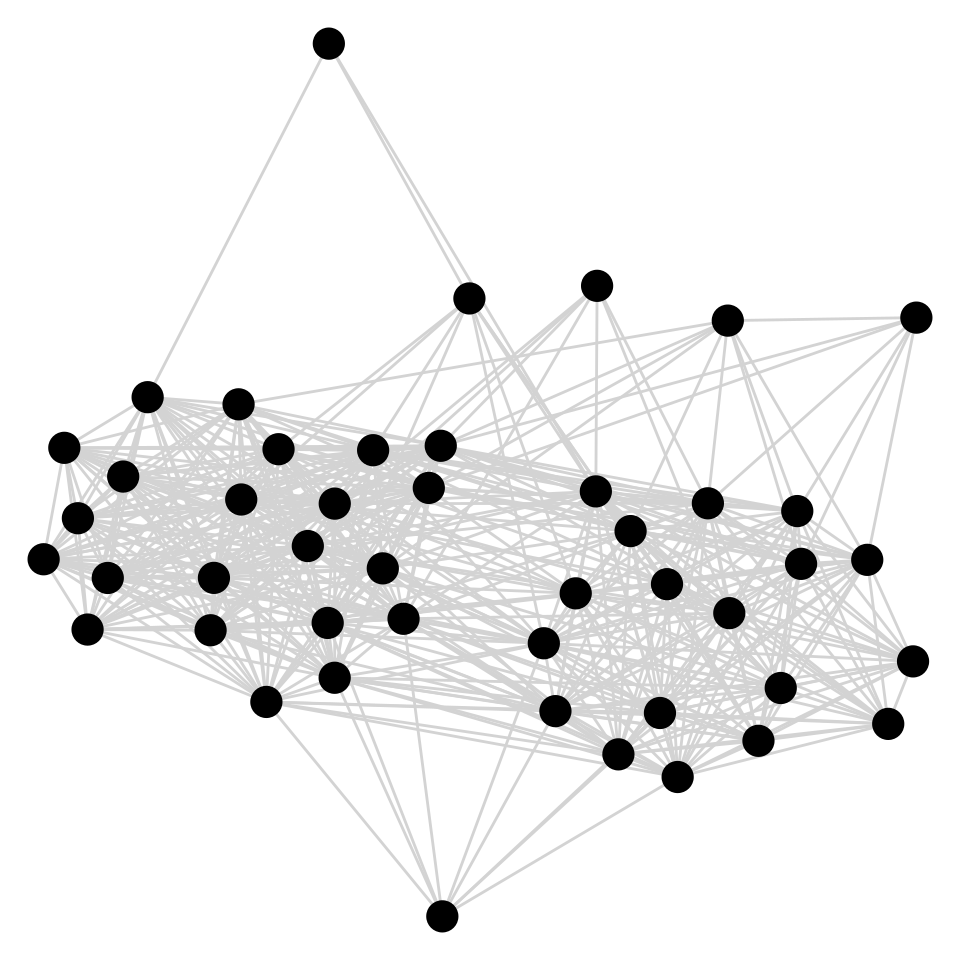

Capítulo 13 Análisis de redes
Por Andrés Cruz
Lecturas de referencia
Newman, M. (2018). Networks: An Introduction (2a ed). New York, NY: Oxford University Press.
Scott, J. (2013). Social Network Analysis (3a ed). London: Sage Publications.
13.1 Introducción
No es exagerado decir que en política todo está conectado con todo. Por ejemplo, miremos el caso de las y los legisladores. Las conexiones son evidentes: partidos, coaliciones, comisiones, familias, colegios… Para comprender mejor estas enmarañadas relaciones, una de las herramientas que está en el cinturón de los cientistas sociales es el análisis de redes. Las redes son capaces de reconocer que todo está conectado con todo, y dar pistas sobre la lógica detrás de esas conexiones. No solo permiten visualizar de forma atractiva dichas conexiones, sino que también calcular distintas mediciones interesantes sobre los actores en cuestión y los vínculos que los unen. En este capítulo aprenderás las bases del análisis de redes con R, principalmente utilizando los paquetes tidygraph y ggraph, que se aproximan al análisis de redes desde los preceptos del tidyverse.
13.2 Conceptos iniciales
13.2.1 Nodos y enlaces
Dos conceptos son básicos para comenzar a expresar una situación como una red. En primer lugar, los nodos (a veces llamados actores) son las unidades de análisis principales: queremos entender cómo se relacionan entre sí. En el ejemplo anterior, las y los legisladores serían los nodos de la red. Segundo, los enlaces (a veces llamadas conexiones o vínculos) muestran cómo los nodos están conectados unos con otros. Entre las y los legisladores, una forma de enlace posible es “haber propuesto una ley juntos”, también llamado co-presentación (co-sponsorship).
Una red no es más que una serie de nodos conectados a través de enlaces, como se puede apreciar en la Figura 13.1. En términos del ejemplo anterior, podemos imaginar que dicha red grafica conecta a las legisladoras A, B, C, D (los nodos) según su co-presentación de proyectos w, x, y, z (los enlaces). Así, la red muestra que la legisladora B ha presentado al menos un proyecto de ley con todas las demás legisladores de la red, mientras que la legisladora D solo lo ha hecho con B. Por su lado, las legisladoras A y C tienen dos enlaces de co-presentación cada una, formando una tríada A-B-C.
Figura 13.1: Esquema de red de co-sponsorship entre cuatro legisladoras
13.2.2 Matriz de adyacencia
Aparte de una descripción visual, como la de la Figura 13.1, es también posible representar las redes como matrices de adyacencia. La Tabla 13.1 muestra la misma red que hemos visualizado anteriormente, esta vez en formato matriz. Los 1 indican que existe un enlace entre ambos nodos (de co-presentación, en nuestro ejemplo), mientras que los 0 indican lo contrario. Nota cómo la diagonal de la matriz está llenada solo por unos: esta es una convención útil para distintos cálculos matemáticos. Adicionalmente, este tipo de matriz para una red básica es simétrica: si sabemos que el nodo A está enlazado con el nodo B, automáticamente sabemos que el nodo B está enlazado con el A.
| A | B | C | D | |
| A | 1 | 1 | 1 | 0 |
| B | 1 | 1 | 1 | 1 |
| C | 1 | 1 | 1 | 0 |
| D | 0 | 1 | 0 | 1 |
13.2.3 Pesos y dirección
La naturaleza de nuestros datos
Una red tan básica como la vista hasta ahora puede complejizarse bastante más, de acuerdo a la naturaleza de los datos. Dos complejizaciones típicas refieren a los enlaces: añadir pesos y dirección. Para comenzar con los pesos, en nuestro ejemplo los legisladores están conectados si es que alguna vez han presentado un proyecto de ley en conjunto. Sin embargo, a menudo es de interés no solo conocer la existencia de una conexión entre dos actores, sino que también la fuerza de esta: no es lo mismo que dos legisladores hayan aceptado con reticencia presentar un proyecto juntos en una ocasión, a que hayan presentado múltiples proyectos de ley en conjunto. Volvamos a la matriz de adyacencia, esta vez incluyendo pesos. En este nuevo ejemplo, de la Tabla 13.2, las legisladoras A y B han presentado 9 proyectos de ley juntas. Nota cómo, por convención, la diagonal de la matriz sigue llena de unos.
| A | B | C | D | |
| A | 1 | 9 | 1 | 0 |
| B | 9 | 1 | 1 | 6 |
| C | 1 | 1 | 1 | 0 |
| D | 0 | 6 | 0 | 1 |
La segunda forma de añadir información adicional a los enlaces es registrando su dirección. En algunas legislaturas los proyectos de ley tienen un autor o autora principal (sponsor), a quien el resto de los legisladores se suman (co-sponsors). En estos casos, la red de co-sponsorship naturalmente tendrá dirección: un legislador “auspiciará” a otro firmando en su proyecto de ley, sin que esta relación sea necesariamente recíproca. Es posible incluir esta información en la red, tal como realiza Fowler (2006) para el Congreso de Estados Unidos. Una matriz de adyacencia con direcciones (y pesos) podría verse como la de la Tabla 13.3. Nota que ahora la matriz no es simétrica, pues existe más información sobre la relación de co-sponsorship entre las legisladoras A y B: mientras que la legisladora A auspició siete proyectos de la legisladora B, esta solo reciprocó en dos proyectos de ley1.
| A | B | C | D | |
| A | 1 | 7 | 1 | 0 |
| B | 2 | 1 | 1 | 6 |
| C | 1 | 1 | 1 | 0 |
| D | 0 | 6 | 0 | 1 |
13.3 Bases de datos de redes
Siguiendo con el espíritu del ejemplo anterior, en este capítulo trabajaremos con datos de co-sponsorship de leyes en el Senado argentino. Utilizaremos los datos de Alemán et al. (2009), en específico para el año 1983, justo después del regreso de la democracia. Comencemos cargando la base de datos con la ayuda de nuestro paquete paqueteadp:
Podemos revisar que nuestra base se cargó adecuadamente con ls():
## [1] "leyes_argentina"Para pasar esta base de datos a un formato de redes utilizaremos el paquete tidygraph. Nuestro objetivo será el siguiente: crear dos bases de datos, una con información sobre los nodos de la red (legisladores/as) y otra con información sobre los vínculos entre esos nodos (firmas en común). Nota que el procedimiento exacto para crear estas bases dependerá de la estructura original de tus datos.
Comencemos explorando nuestra base inicial:
leyes_argentina
## # A tibble: 665 x 7
## id_proyecto n_firmantes id_leg nombre_leg provincia_leg partido_leg
## <chr> <dbl> <dbl> <chr> <chr> <chr>
## 1 0001-S-84 2 25 JOSE H MA… JUJUY JUSTICIALI…
## 2 0001-S-84 2 4 ALFREDO L… JUJUY JUSTICIALI…
## 3 0002-S-84 2 34 OLIJELA D… TUCUMAN JUSTICIALI…
## 4 0002-S-84 2 3 RAMON A A… TUCUMAN JUSTICIALI…
## 5 0003-S-84 2 3 RAMON A A… TUCUMAN JUSTICIALI…
## 6 0003-S-84 2 34 OLIJELA D… TUCUMAN JUSTICIALI…
## 7 0004-S-84 1 37 LUIS SALIM S DEL ESTERO JUSTICIALI…
## 8 0006-S-84 2 38 LIBARDO N… LA RIOJA JUSTICIALI…
## 9 0006-S-84 2 29 EDUARDO M… LA RIOJA JUSTICIALI…
## 10 0007-S-84 2 38 LIBARDO N… LA RIOJA JUSTICIALI…
## # … with 655 more rows, and 1 more variable: bloque_leg <chr>Como puedes notar, esta es una base de formato “long”, donde cada firma es una fila. De esta forma, podemos inmediatamente saber que hubo 665 firmas en proyectos durante el año 1983. ¿En cuántos proyectos se distribuyeron esas firmas? Hagamos una tabla de frecuencia para la variable id_proyecto, utilizando la función count():
leyes_argentina %>%
count(id_proyecto)
## # A tibble: 248 x 2
## id_proyecto n
## <chr> <int>
## 1 0001-S-84 2
## 2 0002-S-84 2
## 3 0003-S-84 2
## 4 0004-S-84 1
## 5 0006-S-84 2
## 6 0007-S-84 2
## 7 0009-S-84 6
## 8 0010-S-84 3
## 9 0011-S-84 5
## 10 0012-S-84 9
## # … with 238 more rowsSabemos entonces que hubo 248 proyectos de ley. ¿Cuántos legisladores/as firmaron en proyectos?
leyes_argentina %>%
count(id_leg)
## # A tibble: 46 x 2
## id_leg n
## <dbl> <int>
## 1 1 13
## 2 2 21
## 3 3 24
## 4 4 18
## 5 5 23
## 6 6 19
## 7 7 26
## 8 8 21
## 9 9 15
## 10 10 10
## # … with 36 more rowsNota que la variable id_leg asigna un número correlativo, entre 1 y 46, para cada senador/a. Entonces, hasta ahora sabemos que 46 senadores/as firmaron en proyectos, sumando 665 firmas en 248 proyectos de ley distintos. Pero volvamos a nuestro objetivo inicial para comenzar con el análisis de redes: necesitamos crear una base de datos de nodos y otra de enlaces.
Nuestra base de datos de nodos tendrá, entonces, información de los legisladores/as, totalizando 46 observaciones. Otras variables en la base que nos entregan información sobre los legisladores/as son nombre_leg, provincia_leg, partido_leg y bloque_leg, por lo que estas deberían estar presentes en nuestra base de datos de nodos. Construyámosla:
df_nodos <- leyes_argentina %>%
group_by(id_leg) %>%
summarize(nombre_leg = unique(nombre_leg),
provincia_leg = unique(provincia_leg),
partido_leg = unique(partido_leg),
bloque_leg = unique(bloque_leg))df_nodos
## # A tibble: 46 x 5
## id_leg nombre_leg provincia_leg partido_leg bloque_leg
## <dbl> <chr> <chr> <chr> <chr>
## 1 1 RAMON A ALMENDRA SANTA CRUZ JUSTICIALISTA JUSTICIALIS…
## 2 2 JULIO AMOEDO CATAMARCA JUSTICIALISTA JUSTICIALIS…
## 3 3 RAMON A ARAUJO TUCUMAN JUSTICIALISTA JUSTICIALIS…
## 4 4 ALFREDO L BENITEZ JUJUY JUSTICIALISTA JUSTICIALIS…
## 5 5 ANTONIO TOMAS BERHONGAR… LA PAMPA UCR UCR
## 6 6 DEOLINDO FELIPE BITTEL CHACO JUSTICIALISTA JUSTICIALIS…
## 7 7 LUIS BRASESCO ENTRE RIOS UCR UCR
## 8 8 HORACIO F BRAVO HERRERA SALTA JUSTICIALISTA JUSTICIALIS…
## 9 9 ORALDO N BRITOS SAN LUIS JUSTICIALISTA JUSTICIALIS…
## 10 10 JORGE A CASTRO S DEL ESTERO JUSTICIALISTA JUSTICIALIS…
## # … with 36 more rows¡Nuestra base de datos de nodos está lista! Ahora necesitamos crear la base de datos de enlaces, que una a los legisladores/as de acuerdo a su co-sponsorship. Para los propósitos de este ejercicio realizaremos una base binaria, como la del primer ejemplo del capítulo: dos legisladores/as estarán conectados (1) si es que alguna vez en 1983 presentaron un proyecto en conjunto.
Siguiendo el espíritu de las pipes, que revisamos en el Capítulo 3, realizaremos una operación compleja con una sola concatenación de comandos –¡revisa muy bien los comentarios del código!–. Como vimos, nuestro objetivo será crear los pares de diputados que están conectados por, a lo menos, un proyecto en común.
df_enlaces <- leyes_argentina %>%
# Seleccionemos solo las variables de proyecto y legislador
select(id_proyecto, id_leg) %>%
# Ahora unamos la base consigo misma, para crear todas las combinaciones
## de pares de legisladores/as por proyecto
left_join(., ., by = "id_proyecto") %>%
# Eliminemos los pares de un legislador/a consigo mismo
filter(id_leg.x != id_leg.y) %>%
# Quedémonos con lo pares únicos (aquí el orden no importa).
## En la variable id_leg_1 quedará el legislador/a con id menor.
mutate(id_leg_1 = pmin(id_leg.x, id_leg.y),
id_leg_2 = pmax(id_leg.x, id_leg.y)) %>%
select(id_leg_1, id_leg_2) %>%
distinct() %>%
# Ordenemos la base según las ids
arrange(id_leg_1, id_leg_2) %>%
# Creemos una variable solo con 1, que explicitan la conexión entre
## el par de legisladores/as
mutate(d_firma_conjunta = 1L)df_enlaces
## # A tibble: 509 x 3
## id_leg_1 id_leg_2 d_firma_conjunta
## <dbl> <dbl> <int>
## 1 1 2 1
## 2 1 3 1
## 3 1 4 1
## 4 1 5 1
## 5 1 6 1
## 6 1 8 1
## 7 1 9 1
## 8 1 10 1
## 9 1 12 1
## 10 1 16 1
## # … with 499 more rowsExisten 509 vínculos entre legisladores/as en nuestra red. Nota que aquí solo hemos obtenido los pares que están conectados: nuestra base no contiene información sobre los pares sin conexión. Luego, tidygraph asumirá, correctamente, que los pares no explicitados en la base de enlaces se encuentran desconectados.
Ahora solo nos queda crear el objeto tbl_graph, propio del paquete tidygraph. Este simplemente contiene nuestras dos bases de datos:
library(tidygraph)
red_cosp_arg <- tbl_graph(nodes = df_nodos,
edges = df_enlaces,
directed = F # ¡nuestra base no tiene dirección!
)Nota que, para que tbl_graph funcione correctamente en este caso, las id de identifación de cada nodo deben ser correlativas, abarcando desde 1 hasta el total de nodos. Como es el caso en nuestro ejemplo, podemos seguir adelante.
13.4 Disposición gráfica
Ahora tenemos una red de legisladores que se dispone de la siguiente forma:
ggraph(layout_red) +
# Añadir los enlaces:
geom_edge_link(color = "lightgrey") +
# Añadir los nodos (con color según bloque):
geom_node_point(size = 5) +
# Utilizar fondo blanco y tema vacío:
theme_void() +
# Añadir una etiqueta más legible
labs(color = "Bloque legislativo")
13.4.1 Color y forma en la representación visual
PENDIENTE
13.5 Análisis básico de redes
13.5.1 Medidas de centralidad
PENDIENTE
13.5.2 Comunidades en las redes
PENDIENTE
Referencias
Alemán, E., Calvo, E., Jones, M. P., & Kaplan, N. (2009). Comparing Cosponsorship and Roll‐Call Ideal Points. Legislative Studies Quarterly, 34(1), 87-116.
Fowler, J. H. (2006). Connecting the Congress: A study of cosponsorship networks. Political Analysis, 14(4), 456-487.
Nota que esta tercera red, como está descrita en nuestro ejemplo, no registra cuando dos legisladores apoyan en conjunto un proyecto de otro legislador distinto. En este sentido, solo mide apoyos directos entre pares de legisladores.↩